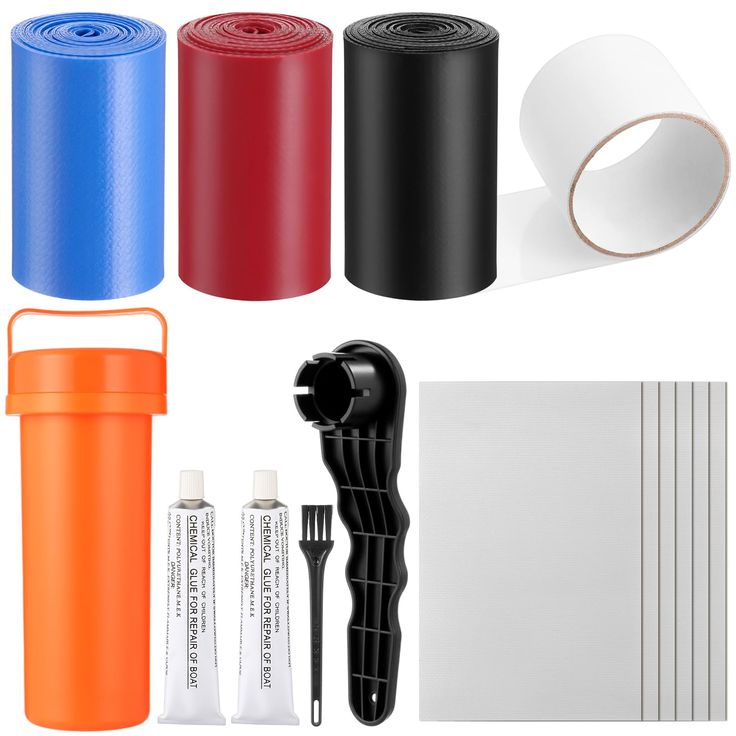
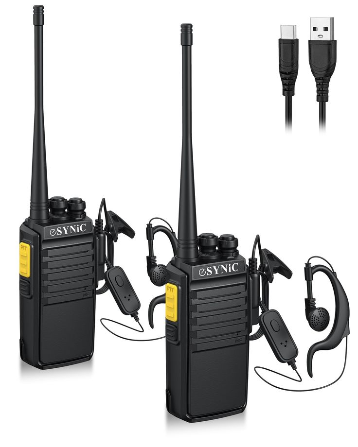

Experience Thrill Like Never Before
Equipment for White Water Rafters
1. Raft
The raft is the primary vessel for navigating the rapids, constructed to weather turbulent waters. Its durability and design ensure the safety and enjoyment of participants, making it the most essential piece of equipment in white water rafting.
Intex Excursion 5 Person Inflatable
Built for high-intensity rapids with reinforced durability and stability.
Buy Now2. Paddle (specific to white water)
A white water-specific paddle is designed to withstand the strong currents and rocks encountered in rapids. Its robust construction and ergonomic grip empower rafters to maneuver effectively, a fundamental component for steering and propulsion in the challenging river environment.
YUZIZ Whitewater Rafting Paddles
Lightweight yet strong for precision steering and enhanced grip.
Buy Now3. Life Jacket or Personal Flotation Device (PFD)
Essential for buoyancy and safety, keeping rafters afloat in turbulent waters.
Airhead Adult Type II Life Jacket |
Provides superior flotation and adjustable straps for maximum safety.
Buy Now4. Water Shoes
Specially designed water shoes provide traction on slippery surfaces and protect feet from sharp rocks or debris in and out of the river. Their importance lies in enhancing grip and foot safety as rafters navigate the varied and challenging river terrain.
5. Helmet
A helmet protects against head injuries from unexpected contact with rocks or equipment. It is a vital piece of gear for safeguarding the rafter’s head, especially in the event of rapids overturning or bumping through tumultuous parts of the river.
6. Wet Suit or Splash Jacket (depending on weather)
A wet suit or splash jacket provides thermal protection, which is critical in cold water conditions to prevent hypothermia. It also adds a layer of defense against abrasions, enhancing comfort and safety during the rafting adventure.
7. Dry Bag (for personal items)
A dry bag secures personal items and keeps them dry amidst splashes and submersion. With reliable waterproofing, rafters can safeguard essentials like medication, snacks, and cameras, to enhance their rafting experience without the worry of water damage.
8. Gloves (optional)
Gloves offer protection from blisters and cold while gripping paddles during long stretches on the water. They can also provide extra grip strength, ensuring a secure hold even when wet, and are thus an optional but recommended item for comfort and hand safety.
Equipment for Guides and Teams
9. Safety Briefing Materials
Safety briefing materials are crucial for guides and teams in white water rafting to educate and prepare rafters for the river’s challenges. They help communicate important safety protocols, environmental hazards, and procedural guidelines, ensuring that all participants are well-informed and ready to face any situation on the water.
10. First Aid and Rescue Kit
A comprehensive first aid and rescue kit is indispensable for handling emergencies and providing immediate medical attention. These kits typically include throw bags for swift water rescue, reinforcing the safety of participants and enabling a rapid response to accidents or health issues that may arise during rafting trips.
11. Repair Kit
A repair kit is essential for any white water rafting team to address unexpected damage to the raft or equipment swiftly. It ensures that minor issues can be fixed on-site, reducing downtime and maintaining the integrity of the raft for continued safe use on the river.
12. Waterproof Communication Devices
Waterproof communication devices are fundamental for maintaining contact between white water rafting guides, team members, and emergency services. They provide a reliable means of communication during expeditions, crucial for coordinating rescues, navigating challenging waters, and ensuring the safety of all participants.
13. Training Manuals
Training manuals are key resources for guides and coaches, offering detailed information on rafting techniques, rescue procedures, and safety measures. They support comprehensive training programs, ensuring that guides and team members are adept in handling the dynamic conditions of white water rafting and can lead trips confidently.
Equipment for White Water Rafting Facilities
14. Base Camp
Base Camp serves as the operational hub for white water rafting expeditions, providing a centralized location for briefings, gear outfitting, and post-trip gatherings. It’s essential for organizing participants, storing equipment, and ensuring everyone is well-prepared before hitting the rapids.
15. Transport Vehicles
Transport vehicles are essential for shuttling rafters and equipment to river start points and from end points. Reliable transportation supports the smooth operation of rafting excursions, ensuring participants experience minimal waiting and maximum adventure time on the water.
16. Storage for Rafts and Equipment
Proper storage facilities protect valuable rafts and gear from the elements and theft, extending their lifespan and keeping them at the ready. Efficient storage solutions also facilitate quick and organized access to equipment for streamlined trip preparation.
16. Changing Rooms and Lockers

Changing rooms and secure lockers are indispensable for providing participants a private space to change into rafting attire and store personal items. They enhance the overall experience by offering convenience and safeguarding belongings while guests are on the river.